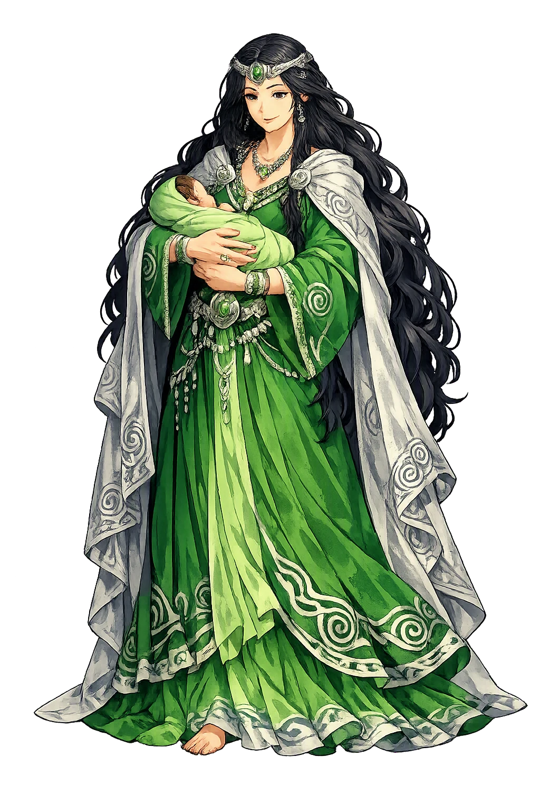
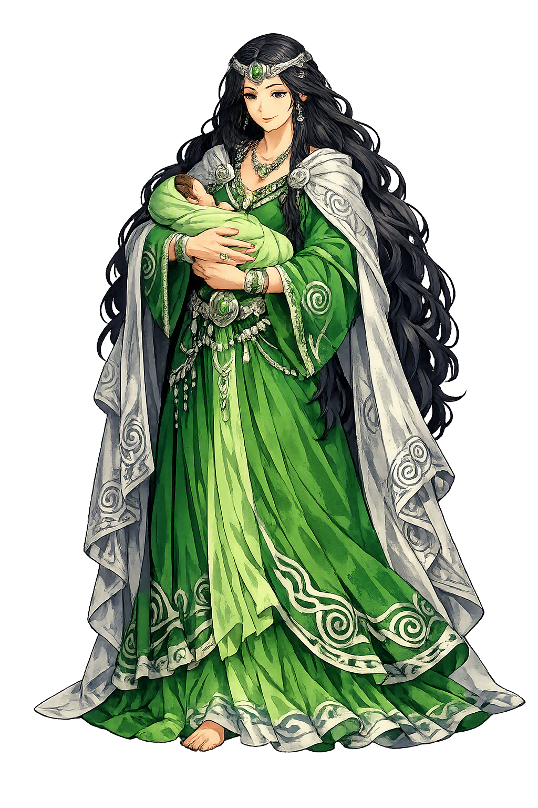

Unicode restoration and ASCII comparison
Don
The name survives in scholarly transliteration. Don is the standard Celtic romanisation, documented in academic sources — “Goddess”. Because the spelling uses only Latin letters, the form is the same in both ASCII and Unicode.
No indigenous writing system is securely attested for individual celtic names. The form shown is a modern scholarly transliteration.
don
The plain don form is identical to the Unicode restoration. Because this name is already written in Latin letters, no diacritics, stress, or script information were lost — only capitalization differs.
Don
The Unicode restoration does not need to recover lost marks for Don. Its value is canonical spelling and consistent cataloguing, not the reconstruction of erased orthography. The domain is readable as-is to both DNS and humanity.
Don.com → don.com
The non-ASCII characters in Don are encoded while the ASCII remains visible. To the DNS, it is Punycode. To humanity, it is Don.
How Don is preserved in writing
No indigenous writing system is securely attested for individual celtic names. The form shown is a modern scholarly transliteration.
Contribute scholarly provenance →Owned, ideal, and ASCII forms of Don
Don
The full Unicode restoration. don.com is not in the PuniCodex collection — it is watched for release; if it drops, this temple upgrades to an owned flagship.
How Don was spoken
Plant Dôn — the children named for the mother
Dôn is the matriarch of the Mabinogi's magical house: sister of Math fab Mathonwy, lord of Gwynedd, and mother of the great kindred the Welsh tradition called Plant Dôn, the Children of Dôn — Gwydion the enchanter, Gilfaethwy his brother, Arianrhod of the star-castle, Gofannon the smith, and Amaethon the ploughman. She is the only major figure of the Four Branches who never speaks, acts, or appears: the whole of the Fourth Branch happens among her children and her brother, and she is present only in the names they carry — uab Dôn, son of Dôn; uerch Dôn, daughter of Dôn.
The sister-sons at Math's court: Gwydion the enchanter, 'the best teller of tales in the world', and Gilfaethwy his brother — named, always, as sons of Dôn.
The daughter proposed for Math's footholder, tested by the wand, mother of Dylan and Lleu — and the proudest, most wounded figure of the Fourth Branch.
The craftsman-sons of Culhwch ac Olwen: Gofannon the smith and Amaethon the ploughman, without whom the giant's impossible tasks cannot be done.
The Children of Dôn — the Welsh divine kindred named for its mother, the standing parallel to Ireland's Túatha Dé Danann.
Stories of Don
Dôn has no myth of her own — no tale, no speech, no deed the sources record. What she has is a family, and the family is the mythology: the Fourth Branch of the Mabinogi unfolds among her children and her brother Math, and the oldest Arthurian tale cannot finish its tasks without two more of her sons. Every witness names her the same way — as the mother in the matronymic — and the Welsh tradition built its northern divine house around exactly that: Plant Dôn, the Children of Dôn.
The Fourth Branch opens at the court of Math fab Mathonwy, lord of Gwynedd — who cannot live unless his feet rest in a virgin's lap, except when war is in the land — and it introduces the great men of that court by their mother's name: Gwydion and Gilfaethwy, sons of Dôn, Math's own sister-sons, his nephews and his company. Gwydion is 'the best teller of tales in the world'. It is these two who set the branch's whole tragedy in motion: Gilfaethwy desires Goewin, the maiden of the foothold, and Gwydion engineers the remedy — a war against Pryderi of Dyfed, bought with conjured stallions, hounds, and shields that vanish after a day, so that the king marches south and the rape can happen.
Through all of it — the war, the crime, the three years of animal-shape punishment — the mother never appears. Dôn is present in the text exactly as a name inside other names: uab Dôn, son of Dôn, the matronymic the tale attaches to her children every time it introduces them. The most consequential family in Welsh prose walks the stage under her name, and she never once walks it herself.
When Math needs a new footholder after Goewin, Gwydion proposes his own sister: 'Seek for you a maiden... here is Arianrhod daughter of Dôn.' The maiden is summoned and asked if she is a virgin; she answers that she does not know but believes she is. Math makes her step over his magic wand, and as she steps she drops a fine yellow-haired boy — Dylan, who at once makes for the sea and takes the sea's nature, Dylan Eil Ton, son of the wave — and, all but unnoticed, 'something small' that only Gwydion marks, wraps in a cloth, and hides in a chest at the foot of his bed. From the chest comes the boy who will be Lleu.
Arianrhod, shamed before the whole court, refuses the boy and lays upon him the three tynghedau — the fated destinies — that he shall have no name until she names him, no arms until she arms him, and no wife of any race then on earth. The rest of the branch is Gwydion undoing his sister's curses by craft. Dôn's daughter is the Fourth Branch's proudest and most wounded figure — and Dôn is present, once again, only in the patronymic: uerch Dôn, daughter of Dôn.
The oldest of the Arthurian tales sends Culhwch to win Olwen, daughter of the chief giant Ysbaddaden Bencawr, who answers the suit by naming the anoethau — the long roll of impossible tasks the suitor must perform before any wedding. Two of Dôn's sons stand inside that list, because the tasks cannot be done without them. Amaethon fab Dôn must be fetched to till the giant's ground: no ploughman alive can work that land but him. And Gofannon fab Dôn, the smith of the divine house, must be brought to the work of the headlands — the craft that prepares the ground is his.
The passage is the Welsh tradition's clearest statement of what the Children of Dôn are: not a royal house in the ordinary sense but a house of powers — enchantment, the plough, the forge — each child a function the world cannot do without. Agriculture and smithcraft, the two oldest arts of civilization, belong to the matriarch's sons.
The Welsh triads keep a battle for the house of Dôn. Among the Three Futile Battles of the Island of Britain stands Cad Goddeu, the Battle of the Trees, fought — the triad says — on account of a bitch, a roebuck, and a lapwing that Amathaon fab Dôn brought away from Annwn, the Otherworld. A theft of three creatures, and a war.
The Book of Taliesin's poem Kat Godeu remembers the same war from the other side of the family: it is Gwydion who enchants the trees of the forest into an army — alder at the front, oak in the thick of it — against Arawn of Annwn. One son's theft begins the quarrel, another son's enchantment fights it; and behind both, again, the mother who gives the house its name and never raises a hand in it.
Welsh tradition organized its divine and heroic world by the mother's name. Plant Dôn, the Children of Dôn, stands beside Plant Llŷr as one of the two great kindreds of the Mabinogi world, and the genealogical tracts give the matriarch a lineage: Dôn daughter of Mathonwy — which makes her sister to Math fab Mathonwy and explains why her children move so freely in his court. The name-list of her children runs across the sources: Gwydion, Gilfaethwy, and Arianrhod in the Fourth Branch; Gofannon and Amaethon in Culhwch ac Olwen.
Later genealogies lengthen the list and supply what the tales omit — a husband, Beli Mawr — but the Mabinogi itself gives Dôn neither husband nor a single word of speech. She is the only major figure of the Four Branches who never appears, and the only one whose name all the others carry. The house is hers because the names are hers; nothing more was ever written, and nothing more was needed.
Dôn is the matriarch who never speaks. Every other great figure of the Four Branches is given a scene, a speech, a deed — Gwydion his enchantments, Arianrhod her curses, Math his wand — and Dôn is given nothing but the space before her children's names. Yet the whole architecture of the tale leans on that silence: the northern house of Welsh mythology is not the house of Mathonwy her father, or of Math her brother, but the Children of Dôn, the kindred named for the mother. The sources are telling us something about where authority lived in the world behind the tales — that the line itself could be reckoned through the woman, and the name that organized a pantheon could be hers alone.
Enter Extended Lore